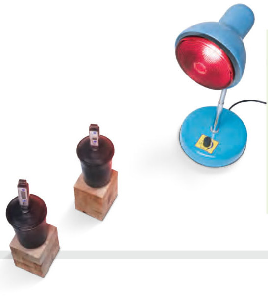

아두이노 실험 보고서 · Ⅱ. 기권과 날씨 · 교과서 56~57쪽 탐구
적외선등에서 가까운 컵과 먼 컵,
적외선등에서 가까운 컵과 먼 컵,
복사 평형 온도는 같을까?
교과서 탐구에서 디지털 온도계로 2 분마다 적던 값을 아두이노가 30 초마다 자동으로 기록해요. 적외선등에서 20 cm와 40 cm 떨어진 검은색 컵 두 개의 온도를 한 그래프에 그려, 복사 평형에 도달하는 과정과 평형 온도의 차이를 비교하자.
실험 정보실험 보고서
실험 제목거리에 따른 복사 평형 온도 비교
관련 단원Ⅱ-1-02 복사 평형을 이루는 지구
실험 형태모둠 실험 (4명)
측정 도구아두이노 UNO + 온도 센서 2개
·실험 날짜와 모둠원 이름
실험 목표 적외선등에서 거리가 다른 두 검은색 컵의 온도를 동시에 기록하여, 물체가 복사 평형에 도달하는 과정과 흡수하는 에너지양에 따라 복사 평형 온도가 달라짐을 설명할 수 있다. (교과서 57쪽 ‘다르게 해 보기’)
1가설 세우기
1적외선등에서 20 cm 떨어진 컵과 40 cm 떨어진 컵의 온도는 시간에 따라 각각 어떻게 변하고, 일정해지는 온도는 어떻게 다를지 예상해 보자.
2변인 통제 이 실험에서 다르게 하는 조건은 이다.
2준비물과 회로 연결
준비물 아두이노 UNO, USB 케이블, LM35 온도 센서, 써미스터(10 kΩ)와 10 kΩ 저항(또는 아날로그 온도 센서 모듈), 브레드보드, 점퍼선(긴 것), 뚜껑이 있는 검은색 알루미늄 컵 2 개(또는 검은 종이로 감싼 종이컵), 적외선등(또는 백열전구 스탠드), 30 cm 자 2 개, 면장갑, 노트북(크롬)
❗ 센서는 컵 속 공기 가운데에! 뚜껑 구멍으로 센서를 넣어 컵 속 공기의 온도를 재요. 센서가 컵 벽이나 바닥에 닿지 않게 하고, 센서 1(LM35)은 20 cm 컵, 센서 2(써미스터)는 40 cm 컵에 넣어요. 두 컵은 적외선등 정면에서 같은 높이에 놓아요.
3실험 방법

- 적외선등 앞 20 cm, 40 cm 위치에 센서를 꽂은 검은색 컵을 하나씩 놓는다. (두 컵이 서로 그늘지지 않게 옆으로 나란히)
- [아두이노 연결하기]를 누르고, 두 컵의 온도가 실내 기온과 같아질 때까지 기다린다.
- 적외선등을 켜는 순간 [▶ 자동 기록 시작]을 누르고 30 분 동안 30 초마다 기록한다.
- 두 그래프가 모두 평평해지면(복사 평형) 기록을 멈추고 적외선등을 끈다.
⚠️ 적외선등과 컵이 뜨거워지므로 면장갑을 끼고 다룬다. 적외선등을 오래 바라보지 않는다. 전선이 적외선등에 닿지 않게 정리하고, 실험이 끝나면 전원을 먼저 끈다.
4측정하기 — 실시간 기록
5결과 정리
| 컵의 위치 | 처음 온도(℃) | 복사 평형 온도(℃) | 평형에 도달한 시간(분) |
|---|---|---|---|
| 🔴 20 cm (센서 1) | |||
| 🔵 40 cm (센서 2) |
자동 분석: 기록 없음 · 평형 도달 시간 = 최종 온도와 0.5 ℃ 이내로 처음 들어온 시각
1두 컵 모두 온도가 처음에는 일정해졌다. 복사 평형 온도는 .
6결론과 토의
1결론 측정한 그래프를 근거로 복사 평형이 무엇인지, 거리에 따라 복사 평형 온도가 왜 달라졌는지 설명해 보자.
2지구에 적용하기 이 실험 결과를 바탕으로, 지구가 지금보다 태양에 가까워진다면 지구의 평균 기온은 어떻게 될지 설명해 보자.
3오차 분석 두 컵의 처음 온도가 다르거나 그래프가 출렁인 까닭을 2 가지 써 보자.
7스스로 평가 · 선생님께 한마디
| 평가 항목 | 스스로 평가 |
|---|---|
| 실험 기구를 바르게 설치하고 아두이노 온도 센서로 온도를 정확하게 측정했다. | |
| 그래프를 근거로 복사 평형과 거리에 따른 평형 온도의 차이를 설명했다. | |
| 안전 수칙을 지키며 모둠원과 협력했다. |
💬실험하면서 어려웠던 점, 새로 알게 된 점, 선생님께 하고 싶은 말을 자유롭게 써 주세요.
제출학생 정보 · 제출하기
보고서를 다 쓰면 제출해요. 측정 기록도 함께 선생님 스프레드시트(중3 탭)에 저장돼요.